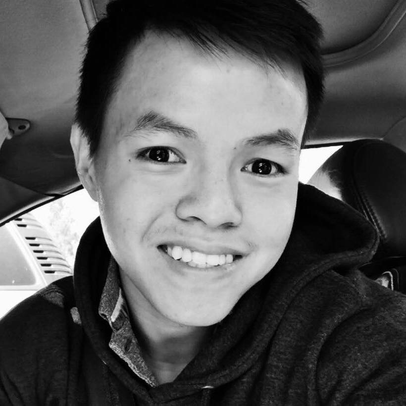

"Immigrated with my family from Vietnam at the age of 19, I feel privileged to live in the
Bay Area and witness the powerful impact of technology. That's why I decided to study
Computer Science in 2013.
From a food server with limited English, I am grateful and humbly proud to be where I am today.
To me, however, everyday is "day one" and this is just the beginning for a brighter future :)."
DAT NGUYEN
US Citizen
EXPERIENCE
Software Engineer
Cisco / Tetration Analytics
June 2019 - Current | Palo Alto, CA
- Working on core data pipelines (Ingestion team).
Software Engineer Intern
Cisco / Tetration Analytics
Spring 2019 | Palo Alto, CA
- Built a data pipeline for threat hunting analysis through DataFrame and SparkSQL.
- Saved nearly 50% in storage cost for ML team by leveraging Parquet Data Format.
Research Scholar
UC Berkeley
Summer 2018 | Berkeley, CA
- Conducted research on deep learning for communication system, advised by Prof. Anant Sahai.
- Implemented successfully a bi-directional LSTM radio receiver, running 40x faster than traditional Viterbi algorithm for correcting Convolution Code.
Research Scholar
Carnegie Mellon University
Summer 2017 | Pittsburgh, PA
- Conducted research and implemented YOLOv2, an ML model, for Automated Road Quality Monitoring System.
- Published a journal paper in “Robotic Institute Summer Scholars Journal 2017”.
Research Scholar
North Carolina A&T University
Summer 2016 | Greensboro, NC
- Implemented Thermography Signal Reconstruction Algorithm to transform 2D to 3D images.
- A part of NASA research to nondestructively estimate defects inside critical parts of rockets.
TECHNICAL SKILLS
-
Languages
- Proficient in: Python, Java, Scala, Javascript
- Worked in: Typescript, C++, C, Go
-
Libraries/Frameworks
- Data Platform: Spark, Hadoop, Kafka, Druid
- Applied ML: TensorFlow / Keras.
- Web: React, Flask, PosgreSQL.
-
Tooling
- Git, K8s, Docker, Ansible.
EDUCATION
University of California, Davis
B.S. Computer Science
Class of 2019
De Anza College
A.S. Computer Science
Class of 2017
PROJECTS
Freedege.org
Volunteer project for a non-profit organization
Fall 2018
- Deployed a fridges network to allow people sharing leftover food with their communities.
- Built a software prototype for automating inventory monitoring process (Kafka / Grafana / TensorFlow).
Memelify
Class Project
Fall 2018
- Implemented a RESTful API service and deployed to Heroku.
- Applied Computer Vision (deep learning) to create a meme classification task.
Jetson Car
Side-project
Fall 2017
- Converted a RC car to race autonomously in an in-house track through Deep Learning.
- Gained significant understandings in sensor fusion, hardware calibration, path planning and deep learning.